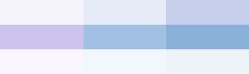

<div class="container">
    <button mat-flat-button color="primary" (click)="logOut()" class="topleft">Log Out</button>
</div>

<router-outlet></router-outlet>
<button mat-fab color="primary" aria-label="Example icon button with a home icon" class="bottomleft" (click)="goHome()">
    <mat-icon>home</mat-icon>
</button>